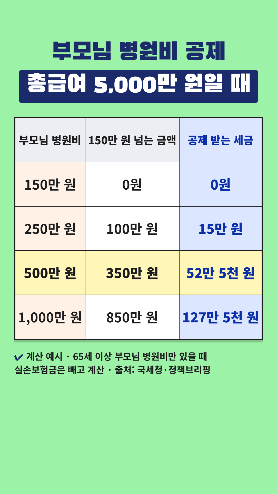

Vrew 작업 카드
2026-10-31-부모님병원비-세액공제 · 사실 검증과 업로드 전 점검을 통과한 회차입니다. 위에서부터 차례로 복사해 붙여넣으세요.
- 대본 붙여넣기 → AI 목소리(차분한 중년, 0.9~1.0배)
- 장면마다 AI 이미지 문구 복사 → 이미지 바꾸기
- 큰 글자가 있는 장면에 텍스트 추가
- 배경음악(오디오 보관함·Vrew 음원) → 내보내기 mp4
- 제목·설명란·고정댓글 복사해 업로드
0단계 · 첫 장면 강조 제목
Vrew 1번 장면 → 삽입 → 이미지 → 같은 폴더의 title-overlay.png(투명 배경) → 화면 전체 크기로 맨 위에 얹기. 1번 장면의 '큰 글자'는 이 이미지가 대신하므로 따로 넣지 않습니다. 아래 배경은 AI 이미지 자리 표시입니다.
0-1단계 · 숫자 카드 (표 이미지)

표시된 장면들을 하나로 이어 붙이거나 장면마다 → 이미지 바꾸기 → 같은 폴더의 number-N.png를 화면 전체 크기로 넣습니다. 이 장면들에는 AI 이미지와 큰 글자를 넣지 않습니다. 자막은 화면 맨 아래에 두어 표를 가리지 않게 합니다.
1단계 · 대본
1. 대본 붙여넣기
Vrew → 새로 만들기 → 텍스트로 비디오 만들기 → 쇼츠 9:16 → 대본 칸에 붙여넣기
부모님 병원비, 세금에서 돌려받을 수 있어요. 연말정산 의료비 세액공제예요. 1년 의료비가 총급여의 3%를 넘으면 넘은 금액의 15%를 세금에서 빼 줘요. 보통 부양가족은 700만 원까지만 인정되는데 65세 이상 부모님은 한도가 없어요. 총급여 5천만 원이면 기준은 150만 원. 표를 보시면 병원비 500만 원일 때 공제받는 세금은 52만 5천 원이에요. 1,000만 원이면 127만 5천 원이고요. 실손보험으로 받은 돈은 빼고 계산해요. 부양가족으로 올린 자녀가 직접 내야 해요. 부모님 소득이 있어도 병원비 공제는 돼요. 간소화 자료를 꼭 확인해 보세요. 개인 상황에 따라 다르니 전문가와 상담하세요.
2~3단계 · 장면별 이미지와 큰 글자
장면 1
나레이션부모님 병원비, 세금에서 돌려받을 수 있어요.
AI 이미지병원 복도 의자에 나란히 앉아 웃으며 이야기하는 70대 한국인 어머니와 50대 딸, 위쪽은 밝고 흐린 벽, 따뜻한 자연광, 사실적인 사진 스타일, 세로 9:16 구도, 화면에 글자 없음
큰 글자부모님 병원비
15% 세액공제
장면 2
나레이션연말정산 의료비 세액공제예요.
AI 이미지탁자 위에 놓인 병원 영수증 몇 장과 계산기, 글자는 흐릿하게, 따뜻한 자연광, 사실적인 사진 스타일, 세로 9:16 구도, 화면에 글자 없음
큰 글자의료비 세액공제
장면 3
나레이션1년 의료비가 총급여의 3%를 넘으면
AI 이미지1년 동안 모은 영수증 묶음을 정리하는 50대 한국인 남성의 손, 글자는 흐릿하게, 따뜻한 자연광, 사실적인 사진 스타일, 세로 9:16 구도, 화면에 글자 없음
큰 글자총급여의 3% 넘으면
장면 4
나레이션넘은 금액의 15%를 세금에서 빼 줘요.
AI 이미지거실 탁자에서 계산기를 두드리는 50대 한국인 여성, 따뜻한 자연광, 사실적인 사진 스타일, 세로 9:16 구도, 화면에 글자 없음
큰 글자넘은 금액의 15%
장면 5
나레이션보통 부양가족은 700만 원까지만 인정되는데
AI 이미지거실 선반 위 가족 사진 액자들, 따뜻한 조명, 따뜻한 자연광, 사실적인 사진 스타일, 세로 9:16 구도, 화면에 글자 없음
큰 글자보통 700만 원까지
장면 6
나레이션65세 이상 부모님은 한도가 없어요.
AI 이미지공원 산책로를 천천히 걷는 70대 한국인 부부, 따뜻한 자연광, 사실적인 사진 스타일, 세로 9:16 구도, 화면에 글자 없음
큰 글자65세 이상 한도 없음
장면 7
나레이션총급여 5천만 원이면 기준은 150만 원.
숫자 카드number-1.png를 화면 전체로 (AI 이미지·큰 글자 대신)
장면 8
나레이션표를 보시면 병원비 500만 원일 때
숫자 카드number-1.png를 화면 전체로 (AI 이미지·큰 글자 대신)
장면 9
나레이션공제받는 세금은 52만 5천 원이에요.
숫자 카드number-1.png를 화면 전체로 (AI 이미지·큰 글자 대신)
장면 10
나레이션1,000만 원이면 127만 5천 원이고요.
숫자 카드number-1.png를 화면 전체로 (AI 이미지·큰 글자 대신)
장면 11
나레이션실손보험으로 받은 돈은 빼고 계산해요.
AI 이미지거실에서 서류를 차곡차곡 정리하는 50대 한국인 여성, 글자는 흐릿하게, 따뜻한 자연광, 사실적인 사진 스타일, 세로 9:16 구도, 화면에 글자 없음
큰 글자실손보험금은 빼고
장면 12
나레이션부양가족으로 올린 자녀가 직접 내야 해요.
AI 이미지병원 수납 창구 앞에서 지갑을 꺼내는 50대 한국인 남성 뒤로 70대 아버지, 로고 없음, 따뜻한 자연광, 사실적인 사진 스타일, 세로 9:16 구도, 화면에 글자 없음
큰 글자올린 자녀가 직접
장면 13
나레이션부모님 소득이 있어도 병원비 공제는 돼요.
AI 이미지식탁에서 웃으며 대화하는 70대 한국인 부모와 50대 아들, 따뜻한 자연광, 사실적인 사진 스타일, 세로 9:16 구도, 화면에 글자 없음
큰 글자소득 있어도 공제
장면 14
나레이션간소화 자료를 꼭 확인해 보세요.
AI 이미지노트북 화면을 함께 보는 50대 한국인 부부, 화면은 흐릿하게, 따뜻한 자연광, 사실적인 사진 스타일, 세로 9:16 구도, 화면에 글자 없음
큰 글자간소화 자료 확인
장면 15
나레이션개인 상황에 따라 다르니 전문가와 상담하세요.
AI 이미지상담 창구에서 상담원과 이야기하는 50대 한국인 여성, 따뜻한 자연광, 사실적인 사진 스타일, 세로 9:16 구도, 화면에 글자 없음
5단계 · 업로드 정보
제목
부모님 병원비, 총급여 3% 넘으면 15% 세액공제
설명란
[음원] 칸은 고른 배경음악으로 채운 뒤 올리세요.
연말정산 의료비 세액공제는 1년 동안 낸 의료비가 총급여의 3%를 넘으면, 넘은 금액의 15%를 내야 할 세금에서 빼 주는 제도예요. 보통 부양가족 의료비는 연 700만 원까지만 인정되지만, 본인·장애인·65세 이상 부양가족의 의료비는 한도가 없어요. 실손보험금처럼 돌려받은 돈은 빼고, 부모님을 부양가족으로 올린 자녀가 직접 낸 의료비여야 해요. 부모님 소득이 기준을 넘어도 의료비 공제는 받을 수 있어요. [계산 예시 — 영상 속 표] 총급여 5,000만 원인 근로자가 65세 이상 부모님 의료비만 냈다고 가정하면 기준선은 5,000만 원 × 3% = 150만 원이에요. - 부모님 병원비 250만 원 → (250만 − 150만) × 15% = 15만 원 - 500만 원 → (500만 − 150만) × 15% = 52만 5천 원 - 1,000만 원 → (1,000만 − 150만) × 15% = 127만 5천 원 본인·배우자 등 다른 가족 의료비가 있으면 계산이 달라지고, 실제로 줄어드는 세금은 내야 할 세금과 다른 공제에 따라 달라요. 낼 세금이 없으면 줄어들 세금도 없어요. [함께 알아 두세요] - 따로 사는 부모님도 생계를 같이하면 의료비 공제가 돼요. 다만 다른 형제가 부모님을 기본공제로 올렸다면 그 형제만 공제받을 수 있어요. - 실손보험금 수령액은 연말정산 간소화 자료에서 확인할 수 있어요. 공제를 받은 뒤 보험금을 받았다면 수정신고가 필요해요. - 미용·성형 비용, 간병인 비용, 외국 의료기관 의료비, 본인부담상한제 사후환급금은 공제되지 않아요. [출처] - 정책브리핑(국세청) '잘못 공제하면 가산세…연말정산 유의해야 할 점' (2017.01.12): https://www.korea.kr/news/policyNewsView.do?newsId=148827537 - 정책브리핑(국세청) '본인·장애인·65세 이상 부양가족 의료비 전액공제 가능' (2016.12.20): https://www.korea.kr/news/policyNewsView.do?newsId=148826412 - 정책브리핑(국세청) '소득 100만 원 넘는 부양가족 공제, 안돼요?…연말정산 오답 공개' (2026.01.23): https://www.korea.kr/news/policyNewsView.do?newsId=148958494 - 정책브리핑(국세청) '연말정산 간소화 개통…실손보험금 자료도 제공' (2021.01.13): https://www.korea.kr/news/policyNewsView.do?newsId=148882618 - 정책브리핑 카드뉴스 '공제될까? 안 될까? 연말정산 Q&A' (2024.12.05): https://www.korea.kr/multi/visualNewsView.do?newsId=148937057 - 국세청 보도참고자료 '국세청이 연말정산 혜택을 빠짐없이 알려드립니다' (2025.12.17): https://www.korea.kr/briefing/pressReleaseView.do?newsId=156735499 - 법적 근거: 소득세법 제59조의4(특별세액공제 중 의료비) (국가법령정보센터 law.go.kr) [꼭 직접 확인해 주세요] 이 영상은 정책브리핑에 실린 국세청 자료를 바탕으로 만들었고, 법령 원문(소득세법 제59조의4)은 직접 대조하지 못했어요. 세법은 개정될 수 있으니 연말정산 전에 홈택스 연말정산 안내나 국세상담센터(국번 없이 126)에서 확인해 주세요. [음원] [Vrew 작업 후 vrew.md 음원 기록란에서 채우기] [안내] 이 영상은 공공기관 자료를 바탕으로 한 일반 정보이며, 세무 상담을 대신하지 않습니다. 특정 병원·보험사·금융상품을 추천하지 않습니다. 공제 여부와 금액은 소득, 가족 구성, 다른 공제 등 개인 상황에 따라 다르니 전문가와 상담하세요. 안내 내용은 2026년 10월 31일 열람 기준이에요. #쇼츠 #연말정산 #의료비세액공제 #부모님병원비 #절세
고정댓글
부모님 병원비, 형제 중 누가 내고 누가 공제받기로 정하셨나요? 가족끼리 정한 방법이나 헷갈렸던 점을 댓글로 나눠 주세요.
업로드 추천 시간: 저녁 8시